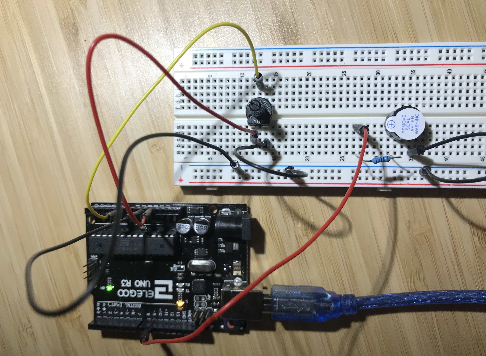
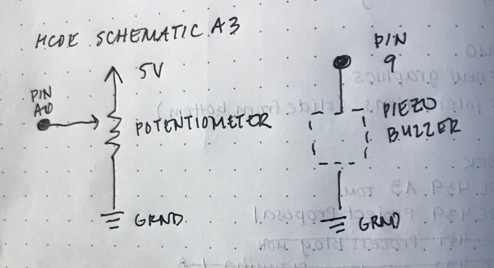

Reine Abubakar's Assignment 3
Code Snippet
// Reine Abubakar
// HCDE 439
// A3: Input Output!
// The following code allows for a buzzer to sound when a potentiometer
// knob is twisted. The more the knob is twisted, the louder the sound.
// However, the buzzer will only buzz until the potentiometer reaches a value of 800.
const int analogPotPin = A0; // Analog input pin where the potentiometer is attached
const int analogBuzzPin = 9; // Analog output pin where the buzzer is attached
int sensorValue = 0; // value from the potentionmeter
int buzzValue = 0; // value output to the buzzer
// Initializes once the board is rest
void setup() {
Serial.begin(9600); // initializes serial communications at 9600 bps
}
// Runs over and over
void loop() {
sensorValue = analogRead(analogPotPin); // Reads the potentiometer value
buzzValue = map(sensorValue, 0, 1023, 0, 255); // Maps the value to the analog value out
// The buzzer will only sound when the sensor is turned up to less than 800
// This is to prevent the high pitch that the buzzer makes when it reaches this level
if (sensorValue < 800) {
analogWrite(analogBuzzPin, buzzValue); // Alters the output value of the buzz
}
// Prints out the results to the monitor to ensure all parts are working
Serial.print("The value of the sensor = ");
Serial.print(sensorValue);
Serial.print("\t The buzzer value = ");
Serial.println(buzzValue);
// If the user twists the knob too much, the speaker will be too loud
// and the monitor will print out that the user should stop turning the knob
if (sensorValue > 650) {
Serial.println("Your ears will hurt-- lower the volume!");
}
delay(10); // Delays readings by 100ms to ensure the volume isn't changing too quickly
}
Circuit
The circuit is composed of one potentiometer and one buzzer. The potentiometer will determine how loudly the buzzer will buzz.
Schematic
After a Google search, I concluded that no resistor was needed for the buzzer. However, I was afraid that the buzz would be too loud while doing this assignment and wake up my dog, so I attached a 220 ohm resistor to reduce the current (thus reducing the volume of the buzzer.)
For the code bit of that maps the potentiometer to the buzzer, I used the following values:
buzzValue = map(sensorValue, 0, 1023, 0, 255);
The potentiometer has the lower and higher bounds of 0 and 1023, and that is mapped to the buzzer values of 0 to 255, which are analog values to 8 bits.
Circuit Operation

When the potentiometer knob is turned, its resistance value changes. Its different values are mapped to how loudly the buzzer will sound. The more the buzzer is turned counterclockwise (a higher sensor value), the louder the buzzer will buzz.